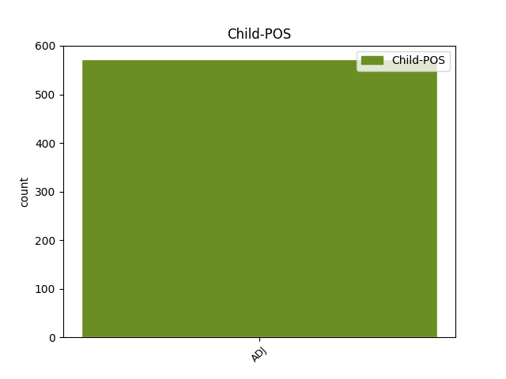

Distribution of features within this leaf

Agreement Rules sorted by frequency.
- When the dependent token is the parataxis(parataxis) of the head token, and the head token is NOUN and the dependent token is ADJ.
1 Она _ _ _ _ 0 _ _ _
2 была _ _ _ _ 0 _ _ _
3 доверчивой _ _ _ _ 0 _ _ _
4 и _ _ _ _ 0 _ _ _
5 доброй _ _ _ _ 0 _ _ _
6 птицей _ _ _ _ 0 _ _ _
7 , _ _ _ _ 0 _ _ _
8 в _ _ _ _ 0 _ _ _
9 ней _ _ _ _ 0 _ _ _
10 чувствовался _ _ _ _ 0 _ _ _
11 прекрасный _ _ _ _ 0 _ _ _
12 характер характер NOUN _ Animacy=Inan|Case=Nom|Gender=Masc|Number=Sing 0 _ _ _
13 : _ _ _ _ 0 _ _ _
14 широкий широкий ADJ _ Case=Nom|Degree=Pos|Gender=Masc|Number=Sing 12 parataxis _ SpaceAfter=No
15 , _ _ _ _ 0 _ _ _
16 беспечный _ _ _ _ 0 _ _ _
17 , _ _ _ _ 0 _ _ _
18 дерзкий _ _ _ _ 0 _ _ _
19 . _ _ _ _ 0 _ _ _
1 Но _ _ _ _ 0 _ _ _
2 проблемные _ _ _ _ 0 _ _ _
3 слои _ _ _ _ 0 _ _ _
4 будут _ _ _ _ 0 _ _ _
5 становиться _ _ _ _ 0 _ _ _
6 все _ _ _ _ 0 _ _ _
7 более _ _ _ _ 0 _ _ _
8 сложными _ _ _ _ 0 _ _ _
9 , _ _ _ _ 0 _ _ _
10 многие _ _ _ _ 0 _ _ _
11 вопросы вопрос NOUN _ Animacy=Inan|Case=Nom|Gender=Masc|Number=Plur 0 _ _ _
12 , _ _ _ _ 0 _ _ _
13 к _ _ _ _ 0 _ _ _
14 которым _ _ _ _ 0 _ _ _
15 уже _ _ _ _ 0 _ _ _
16 в _ _ _ _ 0 _ _ _
17 ближайшее _ _ _ _ 0 _ _ _
18 время _ _ _ _ 0 _ _ _
19 должен должен ADJ _ Degree=Pos|Gender=Masc|Number=Sing|Variant=Short 11 mod@relcl _ _
20 подступиться _ _ _ _ 0 _ _ _
21 Верховный _ _ _ _ 0 _ _ _
22 Совет _ _ _ _ 0 _ _ _
23 , _ _ _ _ 0 _ _ _
24 отличаются _ _ _ _ 0 _ _ _
25 многозначностью _ _ _ _ 0 _ _ _
26 , _ _ _ _ 0 _ _ _
27 неопределенностью _ _ _ _ 0 _ _ _
28 , _ _ _ _ 0 _ _ _
29 неизученностью _ _ _ _ 0 _ _ _
30 возможных _ _ _ _ 0 _ _ _
31 последствий _ _ _ _ 0 _ _ _
32 . _ _ _ _ 0 _ _ _
1 Иркутскую _ _ _ _ 0 _ _ _
2 жизнь _ _ _ _ 0 _ _ _
3 я _ _ _ _ 0 _ _ _
4 помню _ _ _ _ 0 _ _ _
5 всю _ _ _ _ 0 _ _ _
6 изо _ _ _ _ 0 _ _ _
7 дня _ _ _ _ 0 _ _ _
8 в _ _ _ _ 0 _ _ _
9 день _ _ _ _ 0 _ _ _
10 , _ _ _ _ 0 _ _ _
11 там _ _ _ _ 0 _ _ _
12 не _ _ _ _ 0 _ _ _
13 было _ _ _ _ 0 _ _ _
14 ничего _ _ _ _ 0 _ _ _
15 второстепенного _ _ _ _ 0 _ _ _
16 , _ _ _ _ 0 _ _ _
17 его _ _ _ _ 0 _ _ _
18 и _ _ _ _ 0 _ _ _
19 вообще _ _ _ _ 0 _ _ _
20 не _ _ _ _ 0 _ _ _
21 бывает _ _ _ _ 0 _ _ _
22 на _ _ _ _ 0 _ _ _
23 переломе _ _ _ _ 0 _ _ _
24 жизни жизнь NOUN _ Animacy=Inan|Case=Gen|Gender=Fem|Number=Sing 0 _ _ _
25 , _ _ _ _ 0 _ _ _
26 пусть _ _ _ _ 0 _ _ _
27 даже _ _ _ _ 0 _ _ _
28 детской детский ADJ _ Case=Gen|Degree=Pos|Gender=Fem|Number=Sing 24 conj _ SpaceAfter=No
29 . _ _ _ _ 0 _ _ _
1 Был _ _ _ _ 0 _ _ _
2 же _ _ _ _ 0 _ _ _
3 у _ _ _ _ 0 _ _ _
4 него _ _ _ _ 0 _ _ _
5 опыт _ _ _ _ 0 _ _ _
6 собственного _ _ _ _ 0 _ _ _
7 детства _ _ _ _ 0 _ _ _
8 , _ _ _ _ 0 _ _ _
9 был _ _ _ _ 0 _ _ _
10 же _ _ _ _ 0 _ _ _
11 он _ _ _ _ 0 _ _ _
12 сам сам ADJ _ Case=Nom|Degree=Pos|Gender=Masc|Number=Sing 13 udep _ _
13 ребенком ребенок NOUN _ Animacy=Anim|Case=Ins|Gender=Masc|Number=Sing 0 _ _ _
14 ! _ _ _ _ 0 _ _ _
1 Страны _ _ _ _ 0 _ _ _
2 социализма _ _ _ _ 0 _ _ _
3 уже _ _ _ _ 0 _ _ _
4 стали _ _ _ _ 0 _ _ _
5 неотъемлемой _ _ _ _ 0 _ _ _
6 составной _ _ _ _ 0 _ _ _
7 частью _ _ _ _ 0 _ _ _
8 мировой _ _ _ _ 0 _ _ _
9 цивилизации _ _ _ _ 0 _ _ _
10 , _ _ _ _ 0 _ _ _
11 все _ _ _ _ 0 _ _ _
12 более _ _ _ _ 0 _ _ _
13 активно _ _ _ _ 0 _ _ _
14 воздействующей _ _ _ _ 0 _ _ _
15 на _ _ _ _ 0 _ _ _
16 историческое _ _ _ _ 0 _ _ _
17 развитие _ _ _ _ 0 _ _ _
18 остальных _ _ _ _ 0 _ _ _
19 стран _ _ _ _ 0 _ _ _
20 , _ _ _ _ 0 _ _ _
21 но _ _ _ _ 0 _ _ _
22 они _ _ _ _ 0 _ _ _
23 еще _ _ _ _ 0 _ _ _
24 не _ _ _ _ 0 _ _ _
25 превзошли _ _ _ _ 0 _ _ _
26 капитализм _ _ _ _ 0 _ _ _
27 в _ _ _ _ 0 _ _ _
28 экономическом _ _ _ _ 0 _ _ _
29 отношении _ _ _ _ 0 _ _ _
30 ( _ _ _ _ 0 _ _ _
31 производительность _ _ _ _ 0 _ _ _
32 общественного _ _ _ _ 0 _ _ _
33 труда _ _ _ _ 0 _ _ _
34 , _ _ _ _ 0 _ _ _
35 новейшая новый ADJ _ Case=Nom|Degree=Sup|Gender=Fem|Number=Sing 36 subj _ _
36 технология технология NOUN _ Animacy=Inan|Case=Nom|Gender=Fem|Number=Sing 0 _ _ _
37 и _ _ _ _ 0 _ _ _
38 т. _ _ _ _ 0 _ _ _
39 п _ _ _ _ 0 _ _ _
40 ) _ _ _ _ 0 _ _ _
41 . _ _ _ _ 0 _ _ _
1 Кроме _ _ _ _ 0 _ _ _
2 того _ _ _ _ 0 _ _ _
3 , _ _ _ _ 0 _ _ _
4 интенсивное _ _ _ _ 0 _ _ _
5 движение _ _ _ _ 0 _ _ _
6 наблюдается _ _ _ _ 0 _ _ _
7 по _ _ _ _ 0 _ _ _
8 всей _ _ _ _ 0 _ _ _
9 протяженности _ _ _ _ 0 _ _ _
10 Садового _ _ _ _ 0 _ _ _
11 кольца _ _ _ _ 0 _ _ _
12 , _ _ _ _ 0 _ _ _
13 по _ _ _ _ 0 _ _ _
14 Щелковскому _ _ _ _ 0 _ _ _
15 шоссе _ _ _ _ 0 _ _ _
16 и _ _ _ _ 0 _ _ _
17 шоссе _ _ _ _ 0 _ _ _
18 Энтузиастов _ _ _ _ 0 _ _ _
19 , _ _ _ _ 0 _ _ _
20 по _ _ _ _ 0 _ _ _
21 Волгоградскому _ _ _ _ 0 _ _ _
22 и _ _ _ _ 0 _ _ _
23 Рязанскому _ _ _ _ 0 _ _ _
24 проспектам _ _ _ _ 0 _ _ _
25 , _ _ _ _ 0 _ _ _
26 по _ _ _ _ 0 _ _ _
27 улице улица NOUN _ Animacy=Inan|Case=Dat|Gender=Fem|Number=Sing 0 _ _ _
28 Краснопрудная краснопрудный ADJ _ Case=Nom|Degree=Pos|Gender=Fem|Number=Sing 27 appos _ _
29 в _ _ _ _ 0 _ _ _
30 сторону _ _ _ _ 0 _ _ _
31 Комсомольской _ _ _ _ 0 _ _ _
32 площади _ _ _ _ 0 _ _ _
33 и _ _ _ _ 0 _ _ _
34 на _ _ _ _ 0 _ _ _
35 Сущевском _ _ _ _ 0 _ _ _
36 валу _ _ _ _ 0 _ _ _
37 . _ _ _ _ 0 _ _ _
1 Это _ _ _ _ 0 _ _ _
2 казалось _ _ _ _ 0 _ _ _
3 важным _ _ _ _ 0 _ _ _
4 , _ _ _ _ 0 _ _ _
5 а _ _ _ _ 0 _ _ _
6 затруднительность затруднительность NOUN _ Animacy=Inan|Case=Nom|Gender=Fem|Number=Sing 0 _ _ _
7 - _ _ _ _ 0 _ _ _
8 нелепой нелепый ADJ _ Case=Ins|Degree=Pos|Gender=Fem|Number=Sing 6 orphan _ SpaceAfter=No
9 . _ _ _ _ 0 _ _ _
1 На _ _ _ _ 0 _ _ _
2 Серпуховско _ _ _ _ 0 _ _ _
3 - _ _ _ _ 0 _ _ _
4 Тимирязевской _ _ _ _ 0 _ _ _
5 , _ _ _ _ 0 _ _ _
6 Калининской _ _ _ _ 0 _ _ _
7 , _ _ _ _ 0 _ _ _
8 Люблинской _ _ _ _ 0 _ _ _
9 и _ _ _ _ 0 _ _ _
10 Сокольнической _ _ _ _ 0 _ _ _
11 линиях _ _ _ _ 0 _ _ _
12 основные _ _ _ _ 0 _ _ _
13 светофоры _ _ _ _ 0 _ _ _
14 обычно _ _ _ _ 0 _ _ _
15 отключены _ _ _ _ 0 _ _ _
16 , _ _ _ _ 0 _ _ _
17 ведь _ _ _ _ 0 _ _ _
18 поезда _ _ _ _ 0 _ _ _
19 на _ _ _ _ 0 _ _ _
20 них _ _ _ _ 0 _ _ _
21 оборудованы _ _ _ _ 0 _ _ _
22 системой _ _ _ _ 0 _ _ _
23 АЛС _ _ _ _ 0 _ _ _
24 - _ _ _ _ 0 _ _ _
25 АРС _ _ _ _ 0 _ _ _
26 , _ _ _ _ 0 _ _ _
27 которая _ _ _ _ 0 _ _ _
28 сама _ _ _ _ 0 _ _ _
29 выбирает _ _ _ _ 0 _ _ _
30 безопасную _ _ _ _ 0 _ _ _
31 скорость _ _ _ _ 0 _ _ _
32 движения _ _ _ _ 0 _ _ _
33 с _ _ _ _ 0 _ _ _
34 учетом _ _ _ _ 0 _ _ _
35 дистанции _ _ _ _ 0 _ _ _
36 до _ _ _ _ 0 _ _ _
37 впередиидущего впередиидущий ADJ _ Case=Gen|Degree=Pos|Gender=Masc|Number=Sing 38 compound _ _
38 поезда поезд NOUN _ Animacy=Inan|Case=Gen|Gender=Masc|Number=Sing 0 _ _ _
39 . _ _ _ _ 0 _ _ _
1 Также _ _ _ _ 0 _ _ _
2 А. _ _ _ _ 0 _ _ _
3 Левицкая _ _ _ _ 0 _ _ _
4 высказала _ _ _ _ 0 _ _ _
5 опасение _ _ _ _ 0 _ _ _
6 по _ _ _ _ 0 _ _ _
7 поводу _ _ _ _ 0 _ _ _
8 того _ _ _ _ 0 _ _ _
9 , _ _ _ _ 0 _ _ _
10 что _ _ _ _ 0 _ _ _
11 акцент _ _ _ _ 0 _ _ _
12 на _ _ _ _ 0 _ _ _
13 выявление _ _ _ _ 0 _ _ _
14 и _ _ _ _ 0 _ _ _
15 поощрение _ _ _ _ 0 _ _ _
16 талантливой _ _ _ _ 0 _ _ _
17 молодежи _ _ _ _ 0 _ _ _
18 приведет _ _ _ _ 0 _ _ _
19 к _ _ _ _ 0 _ _ _
20 развитию _ _ _ _ 0 _ _ _
21 элитарного _ _ _ _ 0 _ _ _
22 образования _ _ _ _ 0 _ _ _
23 в _ _ _ _ 0 _ _ _
24 ущерб ущерб NOUN _ Animacy=Inan|Case=Acc|Gender=Masc|Number=Sing 0 _ _ _
25 массовому массовый ADJ _ Case=Dat|Degree=Pos|Gender=Masc|Number=Sing 24 comp:obl _ SpaceAfter=No
26 , _ _ _ _ 0 _ _ _
27 и _ _ _ _ 0 _ _ _
28 тогда _ _ _ _ 0 _ _ _
29 образование _ _ _ _ 0 _ _ _
30 перестанет _ _ _ _ 0 _ _ _
31 выполнять _ _ _ _ 0 _ _ _
32 роль _ _ _ _ 0 _ _ _
33 социального _ _ _ _ 0 _ _ _
34 лифта _ _ _ _ 0 _ _ _
35 . _ _ _ _ 0 _ _ _
1 С _ _ _ _ 0 _ _ _
2 завидной _ _ _ _ 0 _ _ _
3 скоростью _ _ _ _ 0 _ _ _
4 ткнувшись _ _ _ _ 0 _ _ _
5 разок разок NOUN _ Animacy=Inan|Case=Acc|Gender=Masc|Number=Sing 0 _ _ _
6 - _ _ _ _ 0 _ _ _
7 другой другой ADJ _ Animacy=Inan|Case=Acc|Degree=Pos|Gender=Masc|Number=Sing 5 unk@fixed _ _
8 в _ _ _ _ 0 _ _ _
9 стенку _ _ _ _ 0 _ _ _
10 , _ _ _ _ 0 _ _ _
11 он _ _ _ _ 0 _ _ _
12 бодро _ _ _ _ 0 _ _ _
13 помчался _ _ _ _ 0 _ _ _
14 вдоль _ _ _ _ 0 _ _ _
15 нее _ _ _ _ 0 _ _ _
16 , _ _ _ _ 0 _ _ _
17 собирая _ _ _ _ 0 _ _ _
18 самый _ _ _ _ 0 _ _ _
19 " _ _ _ _ 0 _ _ _
20 плодородный _ _ _ _ 0 _ _ _
21 " _ _ _ _ 0 _ _ _
22 первый _ _ _ _ 0 _ _ _
23 слой _ _ _ _ 0 _ _ _
24 риса _ _ _ _ 0 _ _ _
25 . _ _ _ _ 0 _ _ _
Disagree Examples:
1 В _ _ _ _ 0 _ _ _
2 первую _ _ _ _ 0 _ _ _
3 очередь _ _ _ _ 0 _ _ _
4 , _ _ _ _ 0 _ _ _
5 как _ _ _ _ 0 _ _ _
6 это _ _ _ _ 0 _ _ _
7 и _ _ _ _ 0 _ _ _
8 положено _ _ _ _ 0 _ _ _
9 , _ _ _ _ 0 _ _ _
10 он _ _ _ _ 0 _ _ _
11 вывел _ _ _ _ 0 _ _ _
12 в _ _ _ _ 0 _ _ _
13 верхнем _ _ _ _ 0 _ _ _
14 углу _ _ _ _ 0 _ _ _
15 гриф гриф NOUN _ Animacy=Inan|Case=Acc|Gender=Masc|Number=Sing 0 _ _ _
16 " _ _ _ _ 0 _ _ _
17 секретно секретный ADJ _ Degree=Pos|Gender=Neut|Number=Sing|Variant=Short 15 appos _ SpaceAfter=No
18 " _ _ _ _ 0 _ _ _
19 . _ _ _ _ 0 _ _ _
1 Он _ _ _ _ 0 _ _ _
2 стал _ _ _ _ 0 _ _ _
3 кричать _ _ _ _ 0 _ _ _
4 , _ _ _ _ 0 _ _ _
5 стучать _ _ _ _ 0 _ _ _
6 кулаком _ _ _ _ 0 _ _ _
7 по _ _ _ _ 0 _ _ _
8 столу _ _ _ _ 0 _ _ _
9 и _ _ _ _ 0 _ _ _
10 один _ _ _ _ 0 _ _ _
11 раз _ _ _ _ 0 _ _ _
12 забыл _ _ _ _ 0 _ _ _
13 пометить _ _ _ _ 0 _ _ _
14 на _ _ _ _ 0 _ _ _
15 важной _ _ _ _ 0 _ _ _
16 бумаге _ _ _ _ 0 _ _ _
17 гриф гриф NOUN _ Animacy=Inan|Case=Acc|Gender=Masc|Number=Sing 0 _ _ _
18 " _ _ _ _ 0 _ _ _
19 секретно секретный ADJ _ Degree=Pos|Gender=Neut|Number=Sing|Variant=Short 17 appos _ SpaceAfter=No
20 , _ _ _ _ 0 _ _ _
21 чего _ _ _ _ 0 _ _ _
22 раньше _ _ _ _ 0 _ _ _
23 с _ _ _ _ 0 _ _ _
24 ним _ _ _ _ 0 _ _ _
25 никогда _ _ _ _ 0 _ _ _
26 не _ _ _ _ 0 _ _ _
27 случалось _ _ _ _ 0 _ _ _
28 . _ _ _ _ 0 _ _ _
1 Сейчас _ _ _ _ 0 _ _ _
2 наступил _ _ _ _ 0 _ _ _
3 исторический _ _ _ _ 0 _ _ _
4 момент момент NOUN _ Animacy=Inan|Case=Nom|Gender=Masc|Number=Sing 0 _ _ _
5 - _ _ _ _ 0 _ _ _
6 работа _ _ _ _ 0 _ _ _
7 ученых _ _ _ _ 0 _ _ _
8 наконец _ _ _ _ 0 _ _ _
9 - _ _ _ _ 0 _ _ _
10 то _ _ _ _ 0 _ _ _
11 востребована востребованный ADJ _ Degree=Pos|Gender=Fem|Number=Sing|Variant=Short 4 parataxis _ SpaceAfter=No
12 . _ _ _ _ 0 _ _ _
1 Миниатюрный _ _ _ _ 0 _ _ _
2 , _ _ _ _ 0 _ _ _
3 длиной длина NOUN _ Animacy=Inan|Case=Ins|Gender=Fem|Number=Sing 0 _ _ _
4 около _ _ _ _ 0 _ _ _
5 17 _ _ _ _ 0 _ _ _
6 сантиметров _ _ _ _ 0 _ _ _
7 , _ _ _ _ 0 _ _ _
8 шестиногий шестиногий ADJ _ Case=Nom|Degree=Pos|Gender=Masc|Number=Sing 3 conj _ _
9 робот _ _ _ _ 0 _ _ _
10 ( _ _ _ _ 0 _ _ _
11 гексапод _ _ _ _ 0 _ _ _
12 ) _ _ _ _ 0 _ _ _
13 из _ _ _ _ 0 _ _ _
14 Стенфордского _ _ _ _ 0 _ _ _
15 университета _ _ _ _ 0 _ _ _
16 уже _ _ _ _ 0 _ _ _
17 бегает _ _ _ _ 0 _ _ _
18 со _ _ _ _ 0 _ _ _
19 скоростью _ _ _ _ 0 _ _ _
20 55 _ _ _ _ 0 _ _ _
21 см _ _ _ _ 0 _ _ _
22 / _ _ _ _ 0 _ _ _
23 сек _ _ _ _ 0 _ _ _
24 . _ _ _ _ 0 _ _ _
1 Другими _ _ _ _ 0 _ _ _
2 словами _ _ _ _ 0 _ _ _
3 , _ _ _ _ 0 _ _ _
4 у _ _ _ _ 0 _ _ _
5 робота _ _ _ _ 0 _ _ _
6 обязательно _ _ _ _ 0 _ _ _
7 должны _ _ _ _ 0 _ _ _
8 быть _ _ _ _ 0 _ _ _
9 ноги _ _ _ _ 0 _ _ _
10 ( _ _ _ _ 0 _ _ _
11 колеса _ _ _ _ 0 _ _ _
12 , _ _ _ _ 0 _ _ _
13 гусеницы гусеница NOUN _ Animacy=Inan|Case=Nom|Gender=Fem|Number=Plur 0 _ _ _
14 и _ _ _ _ 0 _ _ _
15 прочее прочий ADJ _ Case=Nom|Degree=Pos|Gender=Neut|Number=Sing 13 conj _ _
16 не _ _ _ _ 0 _ _ _
17 подходят _ _ _ _ 0 _ _ _
18 для _ _ _ _ 0 _ _ _
19 города _ _ _ _ 0 _ _ _
20 ) _ _ _ _ 0 _ _ _
21 . _ _ _ _ 0 _ _ _